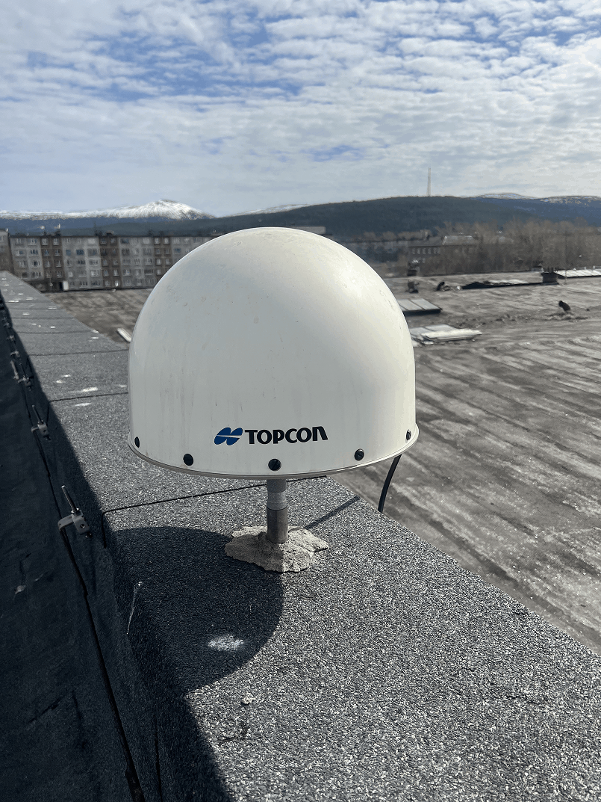
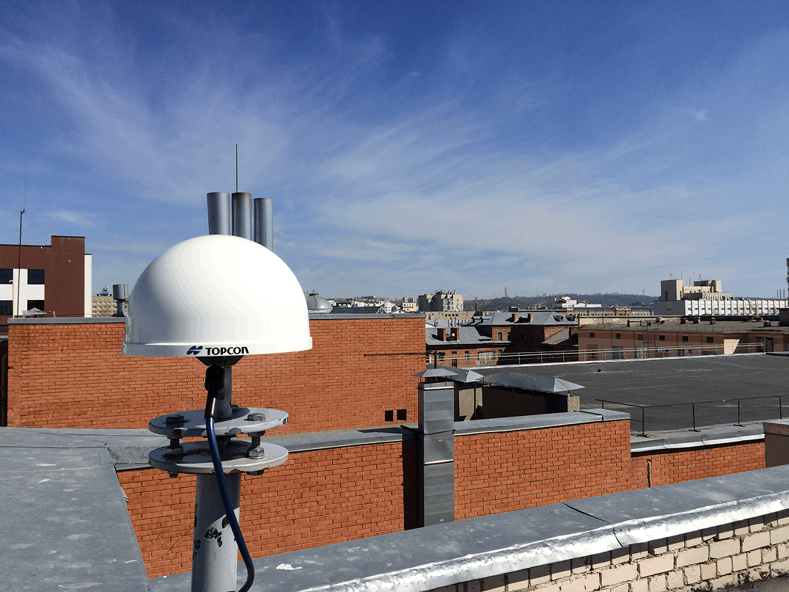
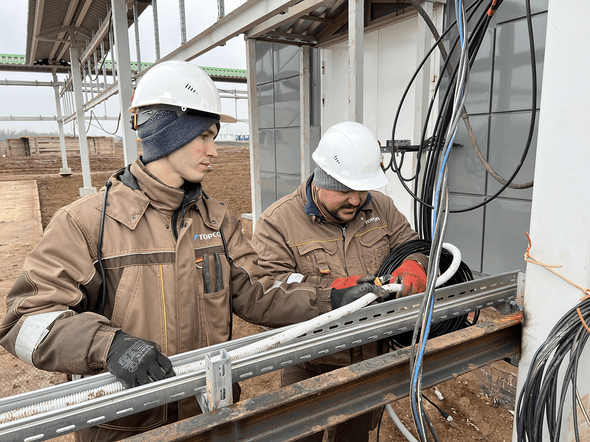

Расширение сети
в жилом квартале
Подключили новостройки к магистрали — до 1 Гбит/с в каждой квартире
Компания ГЕОСТРОЙИЗЫСКАНИЯ предлагает новый сервис для обеспечения геодезической и навигационной деятельности на территории Российской Федерации.
Начиная с 2008 года, компанией ООО «ГЕОСТРОЙИЗЫСКАНИЯ» развивался проект постоянно действующих базовых станций ГНСС, который был создан для привлечения внимания геодезистов к современным технологиям выполнения ГНСС измерений в режиме реального времени и помощи при выполнении работ.
На текущий момент компания ООО «ГЕОСТРОЙИЗЫСКАНИЯ» готова предложить исполнителям новый сервис, позволяющий расширить возможности по работе в режиме реального времени и постобработки — Topnet Live-Россия (ранее «Сеть постоянно действующих дифференциальных станций ГСИ»).
Подробнее о компании

Наша инфраструктура строится на промышленных решениях лидеров рынка. Каждая станция сети TopNET GSI — это надёжное оборудование, круглосуточный мониторинг и стабильные корректирующие поправки для ваших измерений.
Работаем со всеми ГНСС-системами: GPS, ГЛОНАСС, Galileo, BeiDou. Поддерживаем открытые форматы данных и стандартные протоколы обмена — легко интегрируется с любым современным приёмником.
Узнать больше